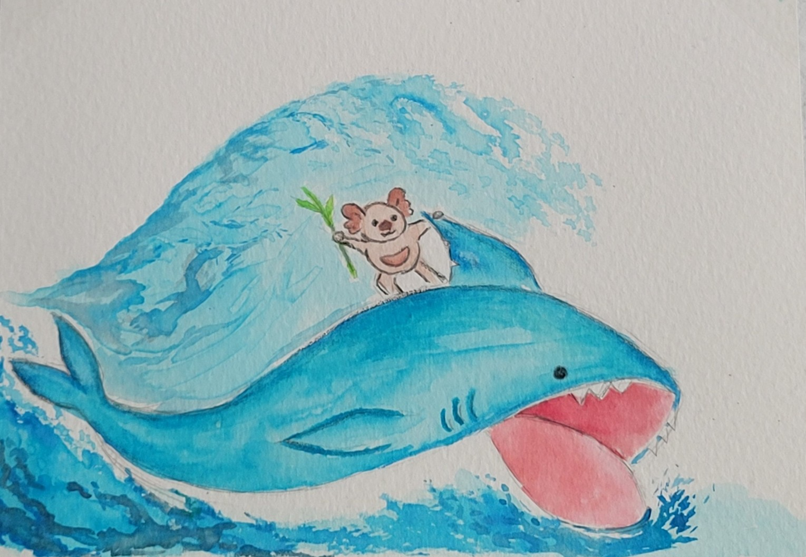

Watercolor

Watercolor is a great and stress-relieving activity that cane be done with any inspiration. This is one of my favorite crafts because you can always go back and change whatever you have already painted. If you add a splash of water, you can remove some paint, spread it around, or build onto a new layer. It is a great entry point into crafting as there are so many opportunities, you don't have to worry about perfection, and it is a great way to express yourself.
This is my favorite "go with the flow" art style. Really take in the imperfections and just go with however the paint feels.
Remember to always let your base layer dry before painting on top of it!
Estimated time: 30 minutes to 1 hour
Materials |
Estimated Cost |
| Watercolor Paper | $5-$30 |
| Watercolor Paints | $5-$30 |
| Watercolor Brushes | $5-$30 |
Here are some influencers on tiktok and instagram who offer helpful watercolor tutorials:
@watercolorsbybree - does videos that starts with a letter, and then helps you draw animals from it.
@malleryjaneart - offers a variety of watercolor tutorials and tipe. She also offers lots of examples of color theory and shading different subjects.
Getting Started
To get started, I am going to reference a video from @watercolorsbybree. She has so many tutorials on how to draw different animals all starting from a letter. There is one that references making a duck. She makes this by starting with the letter "s". This builds the frame of the body. With the top of the "s" being the head, and the bottom of the "s" being the tail. From there, she continues to add more layers around the body to give it more depth and detail. This is a great way to get started with watercolor as it helps you recognize shapes and how to build off of them.
* You can always start off with a pencil but make sure it is a light sketch. Since watercolor is very light, your pencil will show through the paint if it is too dark.
This is a quick reference video for the watercolor duck tutorial.
- Start with a light pencil sketch of the letter "s"
- Build two circles to represent the head and the body. From there, you can also add the legs and build detail where the wings will be
- Lightly erase your pencil sketch and then get started with your base layer.
- *Remember that watercolor starts from light to dark